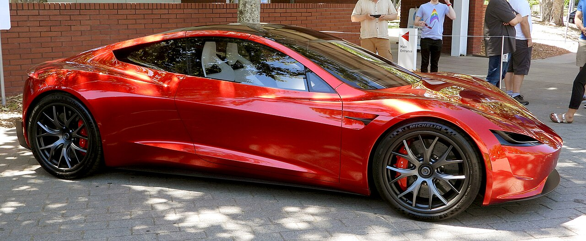

Tesla Roadster 2세대 · 2026년 10월 15일 발표 요약
모든 숫자에 주장 시연 검증 계산 표시를 붙였다
2017년 시제품 공개 때
“2020년에 내놓겠다”주장
2026년 10월 15일 행사에서
관객 앞에서 묘기를 보였다시연
같은 무대에서
“2028년에 생산을 시작하겠다”주장
이 덱의 숫자 표시
주장테슬라·머스크가 말한 것
시연관객 앞에서 실제로 보여 준 것
검증기록이나 독립 측정으로 확인한 것
계산날짜·시각·단위를 직접 환산한 값
출시 목표 2020년 주장 · 0-60 mph = 멈춘 상태에서 시속 60마일까지 걸리는 시간

2017년 공개 시제품(2019년 촬영).
2026년에 공개된 디자인과 다른 차다.
Photo: Editor928111, CC BY-SA 4.0, via Wikimedia Commons
칸 높이 = 그때 약속한 연도 · 아래 = 말한 날짜 · 모두 머스크·테슬라 발언 주장
“2017년부터 예약금을 받았지만,
목표로 한 인도 날짜는 모두 놓쳤다.”CNBC, 2026-10-15 (번역)
네 장면 모두 관객 앞에서 보인 것 시연 · 숫자는 따로 표시 · 그림은 설명용 도식
거꾸로 매달린 뒤 착지
흡입력 최대 2G 주장
2G는 중력의 두 배. 바닥 팬이 공기를 빨아 차를 노면에 붙인다
차들 위로 비틀며 점프
뛰어넘은 차 5대 시연
Model 3·Y, Cybertruck, Semi, Cybercab 위로 ‘kick flip’
0-60 mph 가속 주행
화면 기록 0.81초 주장
달린 장면은 관객 앞 시연, 숫자는 테슬라 자체 타이머 값
수직 이륙 뒤 나선 회전
생중계 마지막 장면 시연
땅에서 곧바로 솟아올라 공중에서 비틀며 돌았다
이 장의 숫자는 모두 테슬라 발표 주장 · 추진기: 불 없이 압축 공기를 뿜어 차를 미는 장치
표의 숫자는 테슬라 발표 주장 · 2017년 km 값만 환산 계산
| 항목 | 2017년 약속 | 2026년 발표 |
|---|---|---|
| 주행거리 | 620마일 약 998 km | 300마일 이상 480 km 이상 |
| 좌석 | 4인승 | 2인승 Rocket은 1인승 |
| 최고 속도 | 250 mph 이상 402 km/h 이상 | Rocket만 230 mph 이상 370 km/h 이상 |
| 가격 | $200,000부터 | 발표 없음 |
| 생산 시작 | 2020년 | 2028년 |
최고 속도는 출처마다 다르다. 테슬라 엔지니어는 Top Gear에 “지금은 214 mph”라고 말했다 주장
관객이 직접 본 것 시연
아직 확인되지 않은 것
“말 그대로 깡충 뛰는 수준이다.”Roger Connor, 스미소니언 항공우주박물관 큐레이터 · 행사 전 CNN 인터뷰(번역)
막대 색 = 표시 색 · 흐린 끝 = “미만”
측정 조건이 서로 달라 순위로 읽으면 안 된다. Plaid 1.98초는 MotorTrend가 직접 잰 독립 측정값이다.
생산 시작
2028년 주장 · 인도 날짜는 발표하지 않았다
가격
어느 버전도 발표하지 않았다. 예약금 조건만 나왔다
도로 주행(Rocket)
Rocket은 ‘공공도로 주행 승인 없음’이라고 테슬라가 밝혔다
투자자의 한 줄
“기존 완성차 회사를 머쓱하게 만든 것 말고는 상업적 가치가 없는 공학 과시였다.”
Gene Munster
Deepwater Asset Management
Reuters 인용 · 번역
“여기서 보인 공학은 진짜다.” Fred Lambert, Electrek (번역)
출시 숫자를 들으면 이렇게 물어보세요
주장인가, 시연인가, 검증인가?
지켜볼 3가지